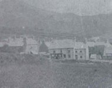

Compton House – Y Stor
Yn Compton House, sefydlwyd y siop gydweithredol gyntaf (y Stôr) gan yr Eifl Workmen Society a’r chwarelwyr yn gweithio am ddim yno. Roedd dau neu dri ohonynt wrth y cownteri ac un wrth y ddesg yn cadw cyfrifon yn y lejar mawr, cyn rhoi entri yn llyfr bach y cwsmer. Roedd y difidend yn atyniad i’r stor. Yn 1950 aeth Lena Pritchard i weithio i’r stôr. Roedd y stôr yn cyflogi dau yn y cyfnod hwn - Harold James yn rheolwr. Symudodd y Stôr i hen siop Miss Jones, cyn cau ym mis Hydref 1969.
Dyma rai o atgofion Ellen Evans, Alpha:
Y Stôr, Compton House.
Yr Eifl Workmen Society.
Ni byddai’r siop wrth gwrs, yn agored ond gyda’r nos ar ôl i’r gweithwyr ddychwelyd o’r chwarel. Y gweithwyr eu hunain yn cymryd twrn i werthu bob mathau o nwyddau a dillad. Bu’r ‘stôr’ yn llwyddiant mawr yn Llithfaen ac yn foddion i godi llawer ar eu traed. Bob chwarter telid y ‘difi’ – hyn a hyn yn y bunt. Cofiaf iddo fod cymaint a choron yn y bunt, a byddai hyn yn help aruthrol i deuluoedd mawr.
Dim ond y rhai mwyaf deallus oedd yn cael mynd ar bwyllgor y ‘stôr’ . Ond llwyddodd un go anllythrennog i fynd arno unwaith. A’r pwyllgor wrthi yn gwneud ordor i’r trafeiliwr, daeth mater gordro te gerbron. Yr hen frawd diniwed yn cynnig eu bod yn ordro tunnell!
Trefor, wrth gwrs oedd y man cychwyn ac oddi yno a siarad caban y daeth y syniad i Lithfaen gan un William Griffith, Bryn Dirwest. Hyd y gwyddys nid oes cofnodion wedi eu diogelu ond mae rhai sy’n ei chofio dros ffordd a iard yr ysgol yn Compton House. Wedi diwrnod o waith caled yn y chwarel byddai chwarelwr yn siopwr gwirfoddol gyda’r nos, dau neu dri ohonynt wrth y cownteri, un arall wrth ei ddesg yn cadw cyfrifol ar ei ledger mawr cyn rhoi entry yn llyfr bach y cwsmar. Cofia Ioan Mai Evans, Alpha, y tracsion yn dod a nwyddau o Gaernarfon cyn dyddiau Morris and Jones. Y talu ar nosweithiau tâl y chwarel, nos Wener neu nos Sadwrn a’r lle yn llawn hyd at ddeg o’r gloch y nos. Uchafbwynt y flwyddyn fyddai pen chwarter bob tri mis – talu’r difidend. Cofia’n dda am lawenydd y pentrefwyr ryw dro yn y 1920au am bod y difi yn hanner coron yn y bunt. Mae llawer atgof am gario’r jar alwyn o baraffin ar nos Sadwrn o’r cwt paraffin a fyddai yn agor am 5. Mi roedd y cwt dros ffordd i weithdy William Crydd yn is i lawr na’r stôr.
Ffeithiau'r Cyfrifiad:

Plât i ddathlu'r Nadolig o'r Eifl Co-operative Store.